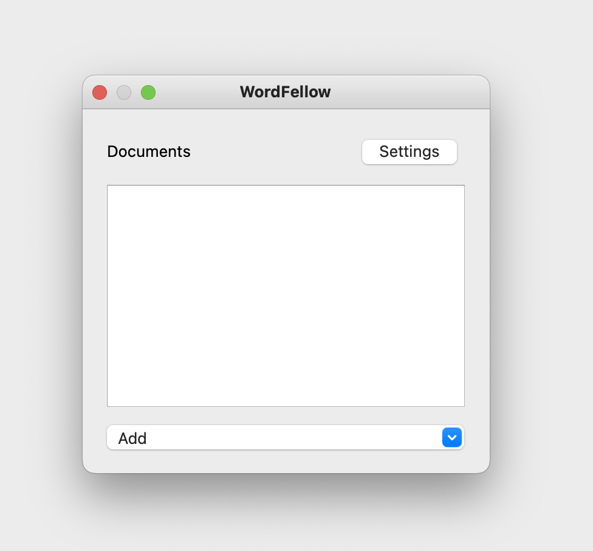

WordFellow is a simple Anki addon that helps you to build your vocabulary word by word. The idea is very simple:

1. Import the texts in your target language into the addon.



2. The addon then splits your texts into words, it shows you word by word along with the sentences that they are in, then you can check how you want to deal with the word.

